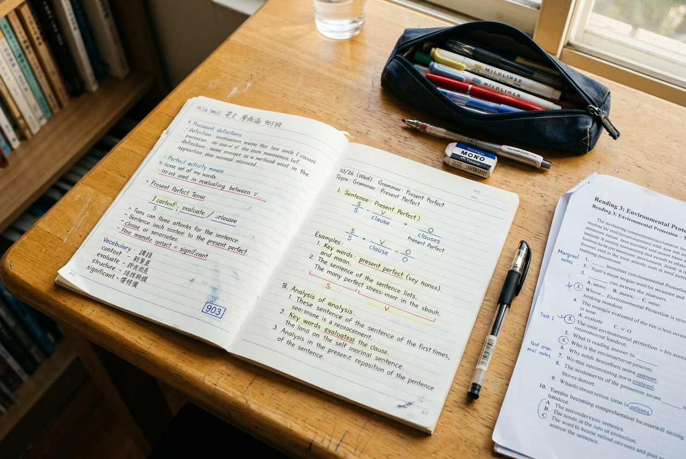

用語法邏輯心智圖，
看穿 文法結構與會考長文脈絡。
「時態老是混淆？被動態、名詞子句、關係代名詞一考就慌？段考題目總是寫不完？」尚學「國中英文」跳脫零碎的題海硬背，而是用「邏輯樹狀心智圖」將繁雜文法條理化，搭配「個人化錯題深入診斷本」與「會考長篇素養閱讀破題策略」。精準配合右昌、國昌、立德、後勁等楠梓學區段考進度，助孩子穩坐校內前茅、直取會考 A++！


刷了幾十張考卷，為什麼段考稍微一換題型又錯同一題？
若只把英文當成零碎記憶的學科，考前抱著講義硬背規則，往往在段考克漏字與素養長文頻頻受挫：
時態子句亂成一團，一遇到陷阱就選錯？
完成式、被動態、關代 which/who 混在一起，憑語感猜答案，遇到誘答選項必定中招。
心智圖邏輯樹狀圖，看穿結構
以時間軸與判定樹邏輯推導句子，做克漏字時像工程師排查線路圖，邏輯清晰、從容篤定鎖定正解！
考卷訂正只是「抄正確解答」，重考依然錯？
訂正若只抄寫 ABCD，根本沒觸及盲點核心，換個題型重複在同一個陷阱摔跤。
個人化錯題深入診斷本，徹底根治
引導孩子用紅筆圈出題幹破題線索與文法依據，釐清誘答盲點，真正看懂題目考點！
會考素養長文篇幅繁重，作答時間緊迫讀不完？
108 課綱會考英文涵蓋密集長文、圖表與生活公告，逐字默翻往往耗費過多作答時間。
跳讀掃讀與定位法，60分鐘從容作答
訓練孩子掌握 Scan & Skim 技巧，快速定位主旨與事實細節，從容寫完並保留 10 分鐘檢查！
語法邏輯心智圖：把零碎條則化為一張導航地圖
文法不是死板規則，而是邏輯嚴密的語言架構。尚學帶孩子親手畫出屬於自己的文法導航心智圖：
📖 個人化錯題深入診斷本：告別「重複犯錯」的扎實工具
標註誘答陷阱
寫下自己當初為什麼選了錯誤選項？是題目沒看清、還是被表面詞性給誤導了？
回溯心智圖母法
將這題對應的文法規則重新在錯題本上畫出分支，確認自己是否真正通透邏輯。
圈出題幹關鍵線索
用紅筆在題目中圈出時間副詞、主詞單複數或先行詞等破題線索，並寫下判定依據，把直覺猜題轉為嚴謹的審題實力。
真實課堂紀實：從心智圖到深度錯題訂正
每一張考卷的錯誤，在尚學都轉化為看得見的學力護城河：
預約國中英語學力診斷・免費段考與會考弱點分析
掌握文法邏輯，國中英文不再是繁重的片段記憶。歡迎預約尚學國中英語學力診斷，由專業名師為孩子檢視文法盲點與閱讀速度，制定最清晰的段考與會考進階計畫。
當日到班參觀，免費提供「國中核心文法盲點快篩」與「會考素養長文閱讀速度檢測乙次」，名額有限敬請提前預約。
關於國中英文的常見問題
Q1. 尚學的國中英文，如何配合右昌、國昌、立德、後勁等不同學校的段考範圍？
楠梓學區各國中版本（康軒、翰林、南一，涵蓋右昌、國昌、立德、後勁等校）尚學皆完整收錄！平時依據大考必備的核心文法打底；段考前三週全面啟動「分校分版複習模式」，針對各校歷屆題庫密集模擬，精準命中考點。
Q2. 到了國三，如何準備 108 課綱國中教育會考的英文科？
國三全面切入「會考真題全真模擬與題型剖析」。除了持續強化聽力抗焦慮耐力，更重點演練跨領域圖表閱讀、雙篇對照與文意推論，訓練在 60 分鐘內從容寫完並保留 10 分鐘檢查，穩固鎖定 A++！
Q3. 如果孩子國小英文基礎普通或文法概念薄弱，進入國中英文專班會不會跟不上？
不用擔心！尚學堅持精緻小班與漸進式引導，不以題海戰術打擊孩子的學習信心。入班後老師會先協助孩子梳理最核心的五大句型與時態骨幹，優先鎖定右昌、國昌、立德、後勁等校段考必考的基本盤分數；等底子扎穩後，再循序漸進攻克克漏字與閱讀題組，讓孩子在每一次段考中看見具體進步、穩健建立自信！
Q4. 如果孩子英文程度較好，除了學校課業還能往哪裡挑戰？
校內英文已穩定達 90 分以上的學員，尚學建議可平行加選「全民英檢 GEPT 專班」（挑戰初級／中級證書）或挑戰「多益 TOEIC 專班」（正規 200 題極速配速），為高中學習歷程建立強大優勢！